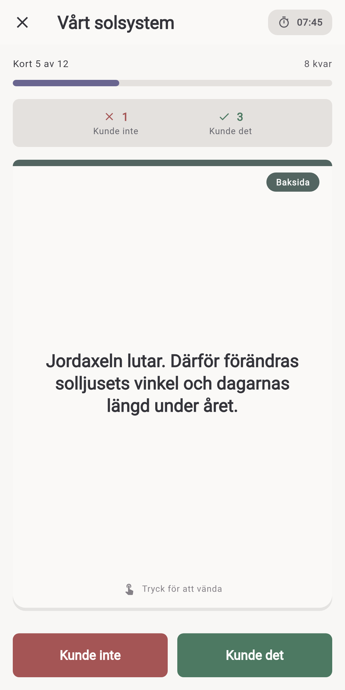
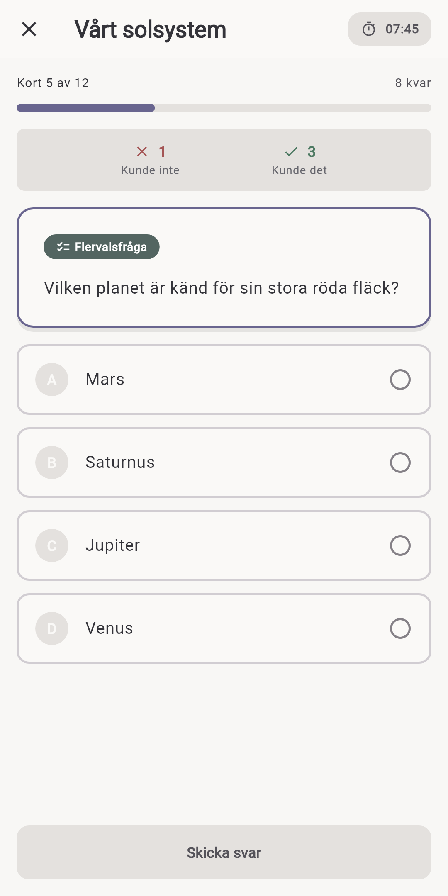
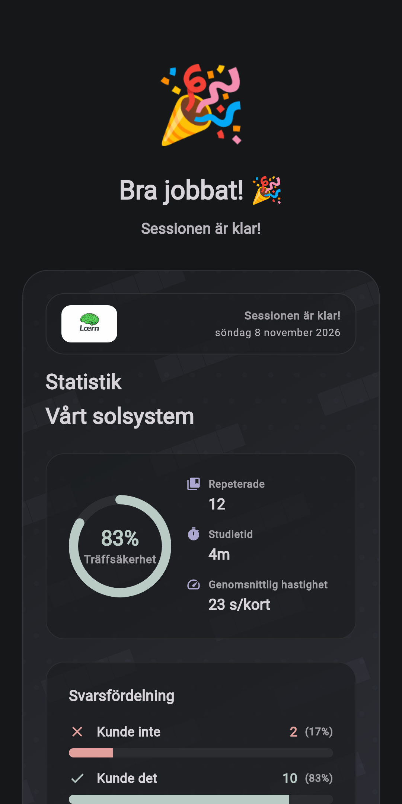

lœrn
Offline-studiekort för att skapa och lära ditt eget innehåll — enkelt, flexibelt och helt ditt.
Inget konto. Inget moln krävs. Ditt studiematerial stannar på enheten om du inte själv väljer att exportera eller dela det.
En titt på lœrn



Studiematerial utan plattformen runt omkring
lœrn är en app för studiekort där du skapar och lär ditt eget innehåll. Bygg kortlekar för skola, universitet, språk, prov eller vad du än vill komma ihåg och plugga sedan med aktiv återkallelse i din egen takt.
Du bestämmer vad som hör hemma i dina kortlekar och vilka verktyg som hjälper dig att skapa dem.
AI kan hjälpa. Den behöver inte finnas inuti appen.
Generativ AI kan vara mycket bra på att förvandla anteckningar till studiematerial. lœrn håller medvetet den tjänsten separerad från själva studiekortsappen.
Du kan använda ChatGPT eller ett annat AI-verktyg du föredrar för att skapa studiekort och sedan importera materialet i lœrn. På så sätt behöver lœrn inte driva någon egen AI-backend eller bära löpande kostnader för AI-tjänster.
Den praktiska fördelen: använd AI när det hjälper, välj själv leverantör och låt lœrn fokusera på att lagra, organisera och studera ditt material.
Varför det är användbart
För vardagslärande
Skapa kortlekar om vilket ämne som helst, från prov och språk till resor eller ett personligt intresse.
För studenter
Importera material från dina anteckningar, plugga med aktiv återkallelse, följ utvecklingen lokalt och dela kortlekar med andra.
För lärare
Organisera material i strukturerade kortlekar och dela det med elever genom enkel export.
Funktioner
Skapa studiekort & organisera kortlekar
Strukturerade kortlekar som är enkla att skapa, redigera och underhålla.
Aktiv återkallelse & självtest
Studielägen för minne, förståelse och repetition.
Offline-lärande
Dina kortlekar och studiesessioner fungerar lokalt utan att kräva ett konto.
Import & export
Ta in material från anteckningar eller externa verktyg och exportera kortlekar för backup eller delning.
Flexibla studiesessioner
Snabba repetitioner eller längre pass — du väljer tempo och omfattning.
Använd din egen AI
Skapa material med det AI-verktyg du gillar och importera det. lœrn förblir oberoende av en inbyggd AI-tjänst.